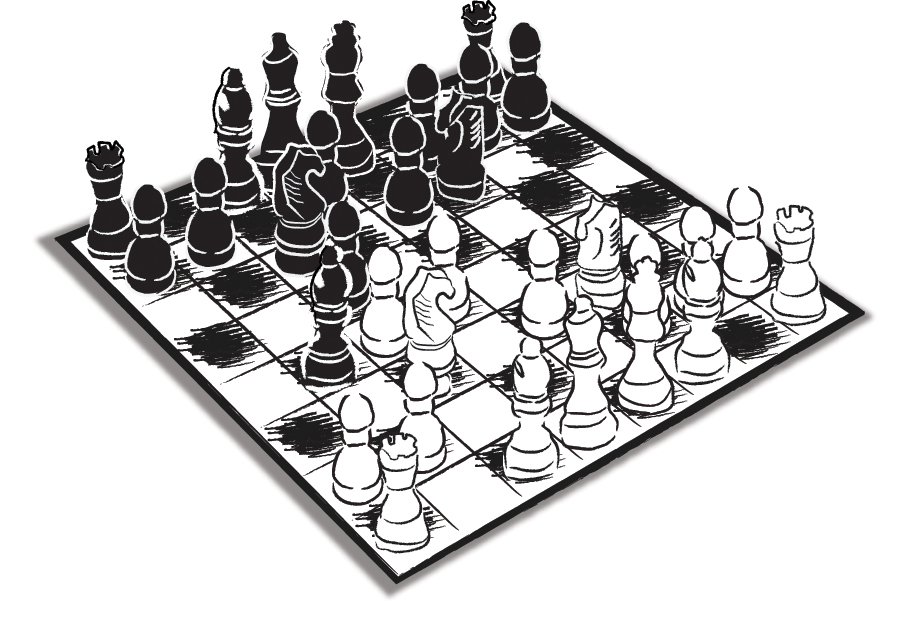

Seminer ve konferanslarımda klasik ancak bir o kadar da çarpıcı konularımdandır. Salondakilere sorarım:
- Türkçede öyle ‘önemli’ kavramlar vardır ki, bunları özellikle Batı dillerine tek kelimeyle çeviremezsiniz. Bu kelimeler, hayatımızı belirleyen temel ‘tutumlarımızı’ dile getirdikleri ölçüde önem kazanırlar. Şimdi bir deneme yapalım. Aranızda İngilizcesine çok güvenen arkadaşlarımız lütfen ellerini kaldırabilir mi?
Mutlaka çok sayıda el kalkar… Hemen arkasından o can alıcı soru gelir:
- Vefa sözcüğünü İngilizcede tek kelimeyle karşılamak isteseniz ne dersiniz?
Bir-iki ‘yakın’ kavram söyler bazıları. Ama buldukları çözüm kendilerini de tatmin etmez. Arkasından hemen ikinci darbe:
- Peki ‘gönül’ kavramını deneyin…
Soul, Spirit falan derler; ancak o Almanların Aha-Effekt dedikleri, bizde ‘cuk oturma’ denen ‘his’ bir türlü oluşmaz. Hele ‘deli gönül’, ‘gönül ferman dinlemez’ gibi tamlamaları ne yapacağız?
Öldürücü darbeyi sona saklayarak yolumuza devam ederiz:
- İsterseniz bir de ‘namus’u deneyelim…
- …
Ve nihayet öldürücü darbe:
- ‘Felek’i ne yapacağız arkadaşlar? Hani ‘kambur’ olan, ‘çemberi’ bulunan, kimine kavun kimine kelek yediren ‘kahpe’ felek… Buyurun çevirelim…
- …
Örnekleri çoğaltmak mümkündür...
Ortak ruhî şekillenmemizin en önemli özelliklerinden biri hiç şüphe yok ki, insanımızın, Batı’da karşılığı hiçbir zaman tek kavramla ifade edilemeyen, yani karşılığı bulunmayan, bu yüzden de oralardaki hayatların içinde yoğun ve ağırlıklı bir yerlerinin olmadığını varsaymamız gereken bazı duygusal yapıların içinden geçerek ruhun olgunlaştığı bir coğrafyada yaşamasıdır…
Tersi de geçerli midir? Yani onların hayatında belirleyici unsur olup da bizde kolay kolay karşılığını bulamadığımız kavramlar var mıdır? Vardır tabii ki. Örneğin gestalt ya da geist ya da weltanschauung gibi Alman felsefesinin ortaya attığı ve diğer dillerde olduğu gibi, Almanca orijinaliyle birlikte kullanılması ya da alınması kaçınılmaz olan kavramlar vardır. Zorlamayla bazen yanlış karşılıklarla kullanıldıkları da olur bunların. Örneğin weltanschauung ‘dünya görüşü’ olarak geçmektedir bizde ve ne hikmetse sadece siyasi bağlamda bir anlam taşımaktadır. Oysa İngilizcede yorumlu bir yaklaşımla karşılandığı gibi philosophy of life (yaşam felsefesi) ya da ‘dünya duruşu’ şeklinde aktarılmalıydı belki… Birebir çeviriler her zaman böyle bir tehlikeyi içinde barındırır.
Vefa, gönül, namus, felek…
Aşk da böyle bir kavramdır aslında. Çünkü bizim kültür ve değer sistemimizde çeşit çeşit aşk vardır. Meslek aşkı… Vatan aşkı… Karasevda anlamında aşk… Bildiğimiz Leyla ile Mecnun aşkı veya Yunus Emre’nin “Aşkın aldı benden beni” mısraında, Şeyh Galip’in “Ah minel aşk”ında anlamlarını bulan ilahi aşk…
Ah mine'l-aşk ve hâlâtihî
ahraka kalbî bi harârâtihî
(Aşkın elinden ve hallerinden...
Ateşiyle yüreğimi yaktı yandırdı...)